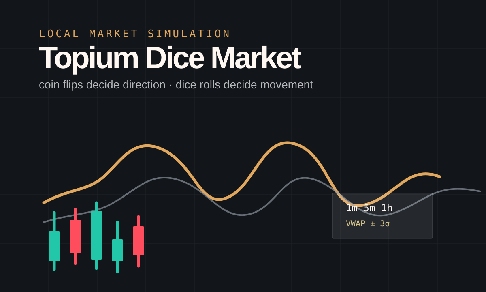

English proficiency
IELTS Academic
8.0overall / 9.0
- Listening
- 8.0
- Reading
- 9.0
- Writing
- 7.5
- Speaking
- 7.0
I build where software meets the physical world, then document what worked, what failed, and what the next version needs.
I’m a Dubai-based student builder working across AI, robotics, software, writing, and long-term strategy.
My pattern is to take messy problems apart, find the structure underneath, then rebuild them into something that can be tested, shown, and improved. I care about systems because they turn raw ambition into repeatable output.
The work here is also a filter against overthinking. Analysis only matters when it becomes proof: code shipped, a prototype moving, a page written, or a decision explained clearly enough to be reused.
A compact profile for admissions: verified results, percentile context where available, completed AP scores, and the subjects shaping the work.
Image-first cards with the useful details up front, followed by a focused project page.
Webcam landmarks mapped into servo motion through Python and Arduino.

Coin flips and dice rolls generate candles, higher timeframes, and VWAP bands.

Windows desktop tool with a virtual keyboard, combo playback, and mouse plus keyboard macro recording.

Personal archival workflow with a dedicated Chrome profile, folder order, and calibrated restore helper.
Each card opens a separate page with the idea, the structure, and the question the piece is trying to answer.
Motives, contradictions, identity, and the things people protect when values become expensive.
How choices change when pressure, ego, opportunity, and consequences collide.
How stories turn decisions into pressure, escalation, reversal, and payoff.
Find the builds, the thoughts, and the work in progress.
Direct links, no newsletter funnel. Code, notes, updates, and contact all in one place.
GitHub
@t8pium
Instagram
@t8pium
Twitter / X
@t0pium
Email
topium.dev@gmail.com